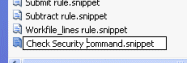
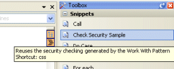
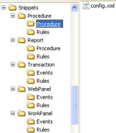
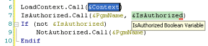

If you have to type frequently the same code in any GeneXus object you can take advantage of Code Snippets in order to reuse them as templates which can be activated easily via drag and drop or using a shortcut from the Snippets toolbox. For example lets assume you are using extensively the Work With pattern and want to reuse in an easy way the following code which is automatically generated by the pattern to check the security: PGetContext.Call(&Context) IsAuthorized.Call(&PgmName, &IsAuthorized) If (not &IsAuthorized) NotAuthorized.Call(&PgmName) Endif Instead of copying a pasting this code between object and defining the variables it uses; I want to have an easy way to insert the code in a Procedure. Why not using a code snippet to encapsulate this code and use it as a command, like available ones such as Call, For Each command (X Evolution 2), For In and so on ? To Create a Code Snippet follow these steps: Create a snippet file wrapping your desired codeWithin the GeneXus X Evolution I installation directory, you will notice the default code snippets folder in the <GeneXusInstallationFolder>\Snippets folder. The easiest way to create your own snippet is to reuse an existing one, and then do the desired modifications. We will use this approach. Copy any command snippet and rename it, in this case we are creating our own with the Check Security command.snippet name.  Edit it and replace its content with the following code: <?xml version="1.0" encoding="utf-8"?> <CodeSnippets xmlns="http://schemas.microsoft.com/VisualStudio/2005/CodeSnippet"> <CodeSnippet Format="1.0.0"> <Header> <Title>Check Security Sample</Title> <Shortcut>css</Shortcut> <Description>Reuses the security checking generated by the Work With Pattern</Description> <Author>Artech</Author> <SnippetTypes> <SnippetType>Expansion</SnippetType> <SnippetType>SurroundsWith</SnippetType> </SnippetTypes> </Header> <Snippet> <Declarations> <Literal Editable="true"> <ID>ContextVariable</ID> <ToolTip>Context SDT Variable</ToolTip> <Default>&Context</Default> <Function> </Function> </Literal> <Literal Editable="true"> <ID>IsAuthorizedVariable</ID> <ToolTip>IsAuthorized Boolean Variable</ToolTip> <Default>&IsAuthorized</Default> <Function> </Function> </Literal> </Declarations> <Code Language=""> <![CDATA[LoadContext.Call($ContextVariable$) IsAuthorized.Call(&PgmName, $IsAuthorizedVariable$) If (not $IsAuthorizedVariable$) NotAuthorized.Call(&PgmName) Endif ]]> </Code> </Snippet> </CodeSnippet> </CodeSnippets> Some comments about the meaning of this code:

Register your snippet for the desired GeneXus ObjectYour snippet file is ready; you will have to register it in the desired GeneXus object you want to use. To register your snippet in a GeneXus object you will have to add an entry in a XML File. Notice that for each GeneXus object there's a config.xml file detailing the available ones for each part.  In this case we just want to register it in the Source Procedure section; notice we need to add a new Snippet tag with the name of the snippet file within the <GeneXusInstallationFolder>\Snippets\Procedure\Procedure\config.xml configuration file: <Snippets> <Category name="Snippets"> <Snippet name="Check Security command"/> <Snippet name="Call command"/> ...... Ready; you have finished the registration process. Restart GeneXusMake sure you have restarted your IDE. Check your new SnippetTo make sure your custom snippet for the Source Procedure section is available open or create a new Procedure, and go to the snippet toolbox; check the tooptip for more information.
Use it !!To use it just drag & drop it or type the shortcut (css for "Check Security snippet" in this example) and tab; you will get the desired replacement.  Once inserted, you just have to create the &Context and &IsAuthorized variables to complete the operation; notice the related green section. Congratulations! You have created and used a custom GeneXus Code Snippet!! Note: Backup your Code Snippets every time you install a new GeneXus Upgrade.
|
| Backlinks |
| Code Snippets |